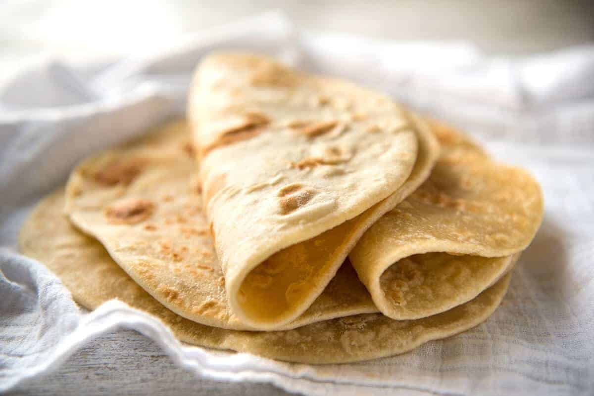

Flatbread

Description
This page features a recipe for simple, yeast-free soft flatbread along with helpful tips and techniques for preparing the dough, rolling it out, and cooking it on a hot pan. The flatbread turns out soft and flexible, and can be made with different types of flour and dairy alternatives. Additionally, the dough can be stored in the fridge or freezer, and the cooked breads can be easily reheated.
Ingredients in flatbread
- Plain flour
- Salt
- Unsalted butter
- Milk
Steps
- Melt butter in milk: Combine butter and milk and heat until butter is just melted – on stove or in microwave.
- Combine Dry: Combine 2 cups flour, salt, butter and milk in a bowl.
- Knead 2 minutes: Sprinkle work surface with flour then knead for a few minutes until it is smooth – it doesn't need much kneading. Add extra flour if the dough is too sticky.
- Rest 30 minutes: Wrap with cling wrap and rest at room temperature for 30 minutes or so.
- Roll into rounds: Dust bench top with flour, cut dough into 6 pieces, roll into balls, then roll out into 20cm / 8" rounds, 2 – 3 mm thick.
- Heat pan: Heat a non stick pan over high heat (no oil).
- Cook: Place one flatbread in the pan, cook for around 1- 1 1/2 minutes – it should puff up dramatically. Once the underside has nice golden patches on it, flip and cook the other side for 45 seconds to 1 minute until the underside has golden spots and it puffs up again.
- Keep wrapped in tea towel: Stack the cooked bread and keep wrapped with a tea towel – the moisture helps soften the surface, making them even more pliable. Continue to cook with remaining pieces.
- Brush with butter or oil(optional): Brush or spray bread with olive oil or melted butter, for a more luxurious finish. Or even with melted butter mixed with minced garlic for a garlic butter version!